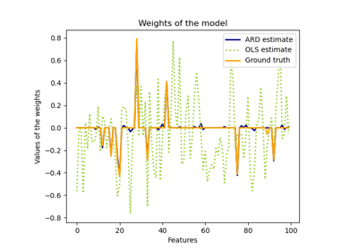

sklearn.linear_model.ARDRegression¶
-
class
sklearn.linear_model.ARDRegression(n_iter=300, tol=0.001, alpha_1=1e-06, alpha_2=1e-06, lambda_1=1e-06, lambda_2=1e-06, compute_score=False, threshold_lambda=10000.0, fit_intercept=True, normalize=False, copy_X=True, verbose=False)[source]¶ Bayesian ARD regression.
Fit the weights of a regression model, using an ARD prior. The weights of the regression model are assumed to be in Gaussian distributions. Also estimate the parameters lambda (precisions of the distributions of the weights) and alpha (precision of the distribution of the noise). The estimation is done by an iterative procedures (Evidence Maximization)
Read more in the User Guide.
- Parameters
- n_iterint, default=300
Maximum number of iterations.
- tolfloat, default=1e-3
Stop the algorithm if w has converged.
- alpha_1float, default=1e-6
Hyper-parameter : shape parameter for the Gamma distribution prior over the alpha parameter.
- alpha_2float, default=1e-6
Hyper-parameter : inverse scale parameter (rate parameter) for the Gamma distribution prior over the alpha parameter.
- lambda_1float, default=1e-6
Hyper-parameter : shape parameter for the Gamma distribution prior over the lambda parameter.
- lambda_2float, default=1e-6
Hyper-parameter : inverse scale parameter (rate parameter) for the Gamma distribution prior over the lambda parameter.
- compute_scorebool, default=False
If True, compute the objective function at each step of the model.
- threshold_lambdafloat, default=10 000
threshold for removing (pruning) weights with high precision from the computation.
- fit_interceptbool, default=True
whether to calculate the intercept for this model. If set to false, no intercept will be used in calculations (i.e. data is expected to be centered).
- normalizebool, default=False
This parameter is ignored when
fit_interceptis set to False. If True, the regressors X will be normalized before regression by subtracting the mean and dividing by the l2-norm. If you wish to standardize, please usesklearn.preprocessing.StandardScalerbefore callingfiton an estimator withnormalize=False.- copy_Xbool, default=True
If True, X will be copied; else, it may be overwritten.
- verbosebool, default=False
Verbose mode when fitting the model.
- Attributes
- coef_array-like of shape (n_features,)
Coefficients of the regression model (mean of distribution)
- alpha_float
estimated precision of the noise.
- lambda_array-like of shape (n_features,)
estimated precisions of the weights.
- sigma_array-like of shape (n_features, n_features)
estimated variance-covariance matrix of the weights
- scores_float
if computed, value of the objective function (to be maximized)
Notes
For an example, see examples/linear_model/plot_ard.py.
References
D. J. C. MacKay, Bayesian nonlinear modeling for the prediction competition, ASHRAE Transactions, 1994.
R. Salakhutdinov, Lecture notes on Statistical Machine Learning, http://www.utstat.toronto.edu/~rsalakhu/sta4273/notes/Lecture2.pdf#page=15 Their beta is our
self.alpha_Their alpha is ourself.lambda_ARD is a little different than the slide: only dimensions/features for whichself.lambda_ < self.threshold_lambdaare kept and the rest are discarded.Examples
>>> from sklearn import linear_model >>> clf = linear_model.ARDRegression() >>> clf.fit([[0,0], [1, 1], [2, 2]], [0, 1, 2]) ARDRegression() >>> clf.predict([[1, 1]]) array([1.])
Methods
fit(self, X, y)Fit the ARDRegression model according to the given training data and parameters.
get_params(self[, deep])Get parameters for this estimator.
predict(self, X[, return_std])Predict using the linear model.
score(self, X, y[, sample_weight])Returns the coefficient of determination R^2 of the prediction.
set_params(self, \*\*params)Set the parameters of this estimator.
-
__init__(self, n_iter=300, tol=0.001, alpha_1=1e-06, alpha_2=1e-06, lambda_1=1e-06, lambda_2=1e-06, compute_score=False, threshold_lambda=10000.0, fit_intercept=True, normalize=False, copy_X=True, verbose=False)[source]¶ Initialize self. See help(type(self)) for accurate signature.
-
fit(self, X, y)[source]¶ Fit the ARDRegression model according to the given training data and parameters.
Iterative procedure to maximize the evidence
- Parameters
- Xarray-like of shape (n_samples, n_features)
Training vector, where n_samples in the number of samples and n_features is the number of features.
- yarray-like of shape (n_samples,)
Target values (integers). Will be cast to X’s dtype if necessary
- Returns
- selfreturns an instance of self.
-
get_params(self, deep=True)[source]¶ Get parameters for this estimator.
- Parameters
- deepboolean, optional
If True, will return the parameters for this estimator and contained subobjects that are estimators.
- Returns
- paramsmapping of string to any
Parameter names mapped to their values.
-
predict(self, X, return_std=False)[source]¶ Predict using the linear model.
In addition to the mean of the predictive distribution, also its standard deviation can be returned.
- Parameters
- X{array-like, sparse matrix} of shape (n_samples, n_features)
Samples.
- return_stdbool, default=False
Whether to return the standard deviation of posterior prediction.
- Returns
- y_meanarray-like of shape (n_samples,)
Mean of predictive distribution of query points.
- y_stdarray-like of shape (n_samples,)
Standard deviation of predictive distribution of query points.
-
score(self, X, y, sample_weight=None)[source]¶ Returns the coefficient of determination R^2 of the prediction.
The coefficient R^2 is defined as (1 - u/v), where u is the residual sum of squares ((y_true - y_pred) ** 2).sum() and v is the total sum of squares ((y_true - y_true.mean()) ** 2).sum(). The best possible score is 1.0 and it can be negative (because the model can be arbitrarily worse). A constant model that always predicts the expected value of y, disregarding the input features, would get a R^2 score of 0.0.
- Parameters
- Xarray-like, shape = (n_samples, n_features)
Test samples. For some estimators this may be a precomputed kernel matrix instead, shape = (n_samples, n_samples_fitted], where n_samples_fitted is the number of samples used in the fitting for the estimator.
- yarray-like, shape = (n_samples) or (n_samples, n_outputs)
True values for X.
- sample_weightarray-like, shape = [n_samples], optional
Sample weights.
- Returns
- scorefloat
R^2 of self.predict(X) wrt. y.
Notes
The R2 score used when calling
scoreon a regressor will usemultioutput='uniform_average'from version 0.23 to keep consistent withr2_score. This will influence thescoremethod of all the multioutput regressors (except forMultiOutputRegressor). To specify the default value manually and avoid the warning, please either callr2_scoredirectly or make a custom scorer withmake_scorer(the built-in scorer'r2'usesmultioutput='uniform_average').
-
set_params(self, **params)[source]¶ Set the parameters of this estimator.
The method works on simple estimators as well as on nested objects (such as pipelines). The latter have parameters of the form
<component>__<parameter>so that it’s possible to update each component of a nested object.- Returns
- self
Examples using sklearn.linear_model.ARDRegression¶
